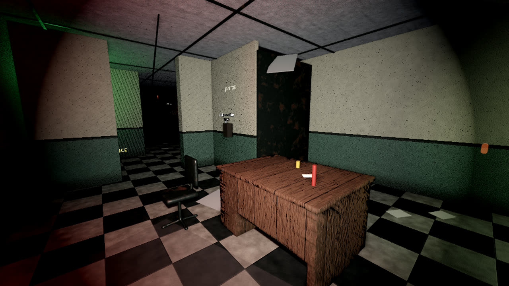
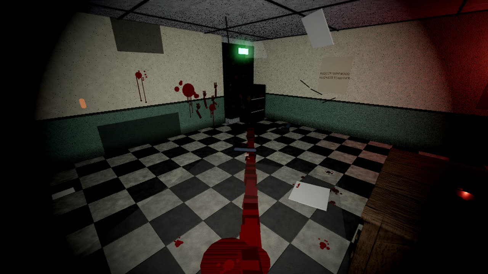
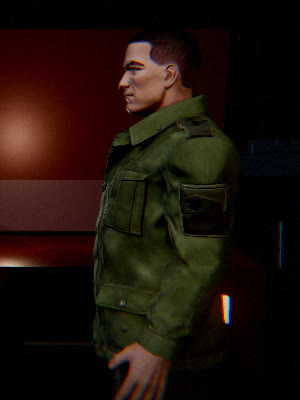
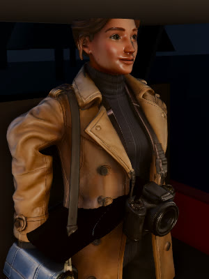
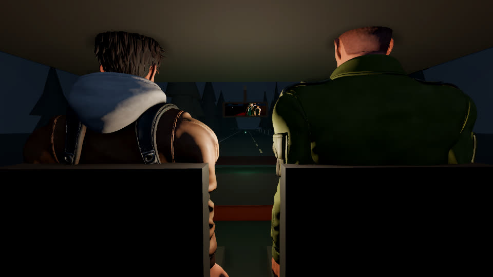
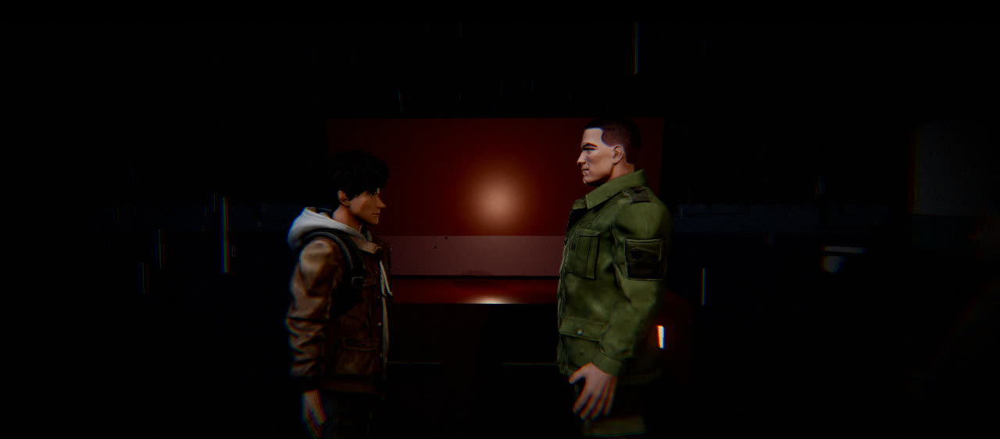
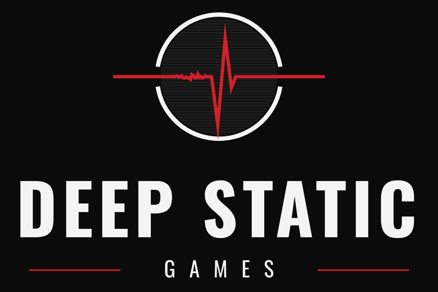

<meta charset="utf-8">
<title>Deep Static Games</title>
<meta name="claude:viewport-fit-sides" content="cover">
<meta name="description" content="Deep Static Games, an indie horror studio. Now making Deepwell, a 1-4 player co-op horror game.">
<link rel="preconnect" href="https://fonts.googleapis.com">
<link rel="preconnect" href="https://fonts.gstatic.com" crossorigin>
<link rel="stylesheet" href="https://fonts.googleapis.com/css2?family=Oswald:wght@400;600;700&family=IBM+Plex+Sans:wght@400;500&family=IBM+Plex+Mono:wght@400;500&display=swap">
<style>
/* Layout: one dark broadcast "feed": a monitor-framed intro, then the game's case file
   (station photo, missing list, the four who go in, footage), read top to bottom. */
:root {
  --void: #0b0a0a;        /* page */
  --panel: #141212;       /* raised surfaces */
  --rule: #2b2626;        /* lines */
  --bone: #e9e4da;        /* main text, like the logo letters */
  --ash: #a39d94;         /* quiet text */
  --signal: #b0141c;      /* the red signal line */
  --signal-hot: #e3363e;  /* red on hover / small red text */
  --display: "Oswald", "Arial Narrow", Impact, sans-serif;
  --body: "IBM Plex Sans", "Segoe UI", Roboto, Arial, sans-serif;
  --mono: "IBM Plex Mono", "Consolas", "Courier New", monospace;
  color-scheme: dark;
}
* { box-sizing: border-box; }
html { scroll-behavior: smooth; }
body {
  background: var(--void); color: var(--bone);
  font: 400 17px/1.65 var(--body);
  padding-left: max(16px, env(safe-area-inset-left, 0px));
  padding-right: max(16px, env(safe-area-inset-right, 0px));
}
/* faint scan lines over everything */
body::after {
  content: ""; position: fixed; inset: 0; pointer-events: none; z-index: 50;
  background: repeating-linear-gradient(to bottom, rgba(0,0,0,0) 0 2px, rgba(0,0,0,0.16) 2px 4px);
}
body::before {
  content: ""; position: fixed; inset: 0 0 auto; height: env(safe-area-inset-top, 0px);
  z-index: 10; background: var(--void);
}
a { color: inherit; }
a:focus-visible, button:focus-visible { outline: 2px solid var(--signal-hot); outline-offset: 3px; }
.wrap { max-width: 1120px; margin: 0 auto; }
img { max-width: 100%; display: block; }

/* ---------- top bar ---------- */
.bar {
  position: sticky; top: env(safe-area-inset-top, 0px); z-index: 20;
  background: color-mix(in srgb, var(--void) 88%, transparent);
  backdrop-filter: blur(6px);
  border-bottom: 1px solid var(--rule);
  margin-left: calc(-1 * max(16px, env(safe-area-inset-left, 0px)));
  margin-right: calc(-1 * max(16px, env(safe-area-inset-right, 0px)));
  padding-left: max(16px, env(safe-area-inset-left, 0px));
  padding-right: max(16px, env(safe-area-inset-right, 0px));
}
.bar .wrap { display: flex; align-items: center; justify-content: space-between; gap: 16px; padding-block: 12px; }
.brand { display: flex; align-items: center; gap: 12px; text-decoration: none; }
.brand canvas { width: 38px; height: 38px; }
.brand span { font: 700 20px/1 var(--display); letter-spacing: 0.08em; }
.brand small { color: var(--signal-hot); font-weight: 400; letter-spacing: 0.3em; margin-left: 6px; }
nav { display: flex; gap: 22px; flex-wrap: wrap; }
nav a { font: 500 12px/1 var(--mono); letter-spacing: 0.16em; text-transform: uppercase; color: var(--ash); text-decoration: none; padding-block: 6px; }
nav a:hover { color: var(--bone); }

/* ---------- intro monitor ---------- */
.intro { padding-block: 40px 28px; }
.monitor {
  position: relative; border: 1px solid var(--rule); background: #000;
  aspect-ratio: 16 / 9; max-width: 100%; overflow: hidden;
}
.monitor video { width: 100%; height: 100%; object-fit: cover; display: block; }
.monitor .rec {
  position: absolute; top: 14px; left: 16px; font: 500 12px/1 var(--mono); letter-spacing: 0.14em;
  color: var(--bone); display: flex; align-items: center; gap: 8px; text-shadow: 0 1px 2px #000;
}
.monitor .rec i { width: 9px; height: 9px; border-radius: 50%; background: var(--signal-hot); animation: blink 1.4s steps(2) infinite; }
@keyframes blink { 50% { opacity: 0.15; } }
.intro-row { display: flex; justify-content: space-between; align-items: center; gap: 16px; flex-wrap: wrap; margin-top: 14px; }
.intro-row p { margin: 0; font: 400 13px/1.5 var(--mono); color: var(--ash); letter-spacing: 0.04em; }
.btn {
  font: 600 14px/1 var(--display); letter-spacing: 0.18em; text-transform: uppercase;
  color: var(--bone); background: transparent; border: 1px solid var(--signal);
  padding: 13px 20px; cursor: pointer; text-decoration: none; display: inline-flex; gap: 10px; align-items: center;
}
.btn:hover { background: var(--signal); }
.btn.solid { background: var(--signal); }
.btn.solid:hover { background: var(--signal-hot); border-color: var(--signal-hot); }

/* ---------- section heads ---------- */
section { padding-block: 72px; border-top: 1px solid var(--rule); }
.eyebrow { font: 500 12px/1 var(--mono); letter-spacing: 0.22em; text-transform: uppercase; color: var(--signal-hot); margin: 0 0 14px; }
h1, h2, h3 { font-family: var(--display); font-weight: 700; text-transform: uppercase; text-wrap: balance; margin: 0; }
h2 { font-size: clamp(34px, 6vw, 64px); line-height: 1; letter-spacing: 0.02em; }
h3 { font-size: 26px; line-height: 1.1; letter-spacing: 0.04em; }
.lede { font-size: 19px; color: var(--bone); max-width: 62ch; margin: 22px 0 0; }
p { max-width: 65ch; }

/* ---------- studio ---------- */
.studio { display: grid; grid-template-columns: 1.1fr 1fr; gap: 48px; align-items: start; }
.studio > * { min-width: 0; }
.studio p { color: var(--ash); margin: 18px 0 0; }
.studio-logo { width: 100%; max-width: 520px; height: auto; margin: 4px 0 6px; }
.sr { position: absolute; width: 1px; height: 1px; overflow: hidden; clip: rect(0 0 0 0); white-space: nowrap; }
.foot-logo { width: 150px; height: auto; display: block; margin-bottom: 10px; }
.studio p strong { color: var(--bone); font-weight: 500; }
.readout { border: 1px solid var(--rule); background: var(--panel); font: 400 14px/1.4 var(--mono); }
.readout div { display: flex; justify-content: space-between; gap: 16px; padding: 14px 18px; border-bottom: 1px solid var(--rule); }
.readout div:last-child { border-bottom: 0; }
.readout dt { color: var(--ash); letter-spacing: 0.08em; text-transform: uppercase; font-size: 12px; }
.readout dd { margin: 0; text-align: right; }
.readout canvas { width: 100%; height: 64px; display: block; border-top: 1px solid var(--rule); }

/* ---------- deepwell ---------- */
.game-head { display: grid; grid-template-columns: 1fr; gap: 20px; }
.game-head > * { min-width: 0; }
.game-title { font-size: clamp(64px, 14vw, 168px); line-height: 0.86; letter-spacing: 0.02em; }
.tags { display: flex; flex-wrap: wrap; gap: 8px; }
.tag { font: 500 12px/1 var(--mono); letter-spacing: 0.1em; text-transform: uppercase; border: 1px solid var(--rule); padding: 8px 10px; color: var(--ash); }
.station { margin: 36px 0 0; position: relative; border: 1px solid var(--rule); }
.station img { width: 100%; aspect-ratio: 16 / 9; object-fit: cover; }
.station figcaption {
  position: absolute; left: 0; right: 0; bottom: 0; padding: 40px 20px 16px;
  background: linear-gradient(to top, rgba(0,0,0,0.92), rgba(0,0,0,0));
  font: 400 13px/1.4 var(--mono); color: var(--bone); letter-spacing: 0.06em;
}
.story { display: grid; grid-template-columns: 1fr 1fr; gap: 48px; margin-top: 48px; }
.story > * { min-width: 0; }
.story p { color: var(--ash); margin: 0 0 16px; }
.story p:first-child { color: var(--bone); font-size: 19px; }

/* missing persons list: the case file */
.casefile { border: 1px solid var(--rule); background: var(--panel); }
.casefile header {
  display: flex; justify-content: space-between; gap: 12px; padding: 14px 18px; border-bottom: 1px solid var(--rule);
  font: 500 12px/1.3 var(--mono); letter-spacing: 0.16em; text-transform: uppercase;
}
.casefile header b { color: var(--signal-hot); font-weight: 500; }
.casefile ol { list-style: none; margin: 0; padding: 0; counter-reset: m; }
.casefile li {
  counter-increment: m; display: grid; grid-template-columns: 34px 1fr auto; gap: 12px; align-items: baseline;
  padding: 12px 18px; border-bottom: 1px dashed var(--rule); font: 400 15px/1.4 var(--mono);
}
.casefile li:last-child { border-bottom: 0; }
.casefile li::before { content: counter(m, decimal-leading-zero); color: var(--ash); font-size: 12px; }
.casefile li span { min-width: 0; }
.casefile li em { font-style: normal; color: var(--ash); font-size: 12px; display: block; }
.casefile li.unknown span { color: var(--ash); }
.casefile li.latest { background: rgba(176, 20, 28, 0.12); }
.casefile .status { font-size: 11px; letter-spacing: 0.14em; color: var(--signal-hot); }

/* ---------- team ---------- */
.team { display: grid; grid-template-columns: repeat(4, 1fr); gap: 16px; margin-top: 40px; }
.card { border: 1px solid var(--rule); background: var(--panel); display: flex; flex-direction: column; min-width: 0; }
.card .photo { aspect-ratio: 3 / 4; background: #000; position: relative; overflow: hidden; }
.card .photo img, .card .photo canvas { width: 100%; height: 100%; object-fit: cover; display: block; }
.card .photo .nofile {
  position: absolute; inset: auto 0 0 0; padding: 10px 12px; font: 500 11px/1.3 var(--mono);
  letter-spacing: 0.14em; text-transform: uppercase; background: rgba(0,0,0,0.75); color: var(--bone);
}
.card .body { padding: 18px; display: flex; flex-direction: column; gap: 10px; flex: 1; }
.card .role { font: 500 11px/1.3 var(--mono); letter-spacing: 0.16em; text-transform: uppercase; color: var(--signal-hot); }
.card p { margin: 0; font-size: 15px; color: var(--ash); }
.card .skill { font: 400 13px/1.5 var(--mono); color: var(--bone); border-top: 1px solid var(--rule); padding-top: 10px; }
.card .skill b { font-weight: 500; color: var(--signal-hot); letter-spacing: 0.08em; }
.card blockquote { margin: auto 0 0; padding-top: 10px; font: 400 italic 15px/1.45 var(--body); color: var(--bone); }

/* ---------- footage ---------- */
.footage { display: grid; grid-template-columns: repeat(6, 1fr); gap: 12px; margin-top: 40px; }
.footage figure { margin: 0; border: 1px solid var(--rule); background: #000; min-width: 0; }
.footage figure img { width: 100%; aspect-ratio: 16 / 9; object-fit: cover; }
.footage figcaption { font: 400 12px/1.4 var(--mono); color: var(--ash); padding: 10px 12px; letter-spacing: 0.04em; }
.footage figcaption b { color: var(--bone); font-weight: 500; }
.footage .big { grid-column: span 4; }
.footage .tall { grid-column: span 2; }
.footage .half { grid-column: span 3; }

/* ---------- how it plays ---------- */
.plays { display: grid; grid-template-columns: repeat(3, 1fr); gap: 0; margin-top: 40px; border: 1px solid var(--rule); }
.plays div { padding: 24px; border-right: 1px solid var(--rule); border-bottom: 1px solid var(--rule); min-width: 0; }
.plays div:nth-child(3n) { border-right: 0; }
.plays div:nth-last-child(-n+3) { border-bottom: 0; }
.plays h3 { font-size: 21px; margin-bottom: 8px; }
.plays p { margin: 0; color: var(--ash); font-size: 15px; }

/* ---------- status ---------- */
.status-box { display: grid; grid-template-columns: 1fr auto; gap: 32px; align-items: center; }
.status-box > * { min-width: 0; }
.meter { margin-top: 26px; font: 400 13px/1.4 var(--mono); color: var(--ash); max-width: 560px; }
.meter .track { height: 10px; border: 1px solid var(--rule); margin: 8px 0; position: relative; background: var(--panel); }
.meter .fill { position: absolute; inset: 0 auto 0 0; width: 70%; background: repeating-linear-gradient(90deg, var(--signal) 0 10px, transparent 10px 12px); }
.meter .row { display: flex; justify-content: space-between; gap: 12px; }

footer { border-top: 1px solid var(--rule); padding-block: 32px 48px; font: 400 12px/1.6 var(--mono); color: var(--ash); letter-spacing: 0.06em; }
footer .wrap { display: flex; justify-content: space-between; gap: 16px; flex-wrap: wrap; }

/* ---------- smaller screens ---------- */
@media (max-width: 960px) {
  .team { grid-template-columns: repeat(2, 1fr); }
  .plays { grid-template-columns: 1fr 1fr; }
  .plays div { border-right: 1px solid var(--rule) !important; border-bottom: 1px solid var(--rule) !important; }
  .plays div:nth-child(2n) { border-right: 0 !important; }
}
@media (max-width: 760px) {
  .studio, .story, .game-head, .status-box { grid-template-columns: 1fr; }
  .footage { grid-template-columns: 1fr; }
  .footage .big, .footage .tall, .footage .half { grid-column: auto; }
  nav { gap: 14px; }
  section { padding-block: 52px; }
}
@media (max-width: 520px) {
  .team, .plays { grid-template-columns: 1fr; }
  .plays div { border-right: 0 !important; }
  .brand small { display: none; }
}
@media (prefers-reduced-motion: reduce) {
  html { scroll-behavior: auto; }
  .monitor .rec i { animation: none; }
}

/* ---------- pages ---------- */
.page > section:first-child { border-top: 0; }
.page-title { font-size: clamp(52px, 11vw, 120px); line-height: 0.9; letter-spacing: 0.02em; }
nav a[aria-current="page"] { color: var(--bone); box-shadow: inset 0 -2px 0 var(--signal); }
.tiles { display: grid; grid-template-columns: repeat(4, 1fr); gap: 14px; margin-top: 32px; }
.tile { display: flex; flex-direction: column; text-decoration: none; border: 1px solid var(--rule); background: var(--panel); min-width: 0; transition: border-color .2s; }
.tile:hover { border-color: var(--signal); }
.tile .pic { aspect-ratio: 4 / 3; overflow: hidden; background: #000; }
.tile .pic img, .tile .pic canvas { width: 100%; height: 100%; object-fit: cover; display: block; transition: transform .4s; }
.tile:hover .pic img, .tile:hover .pic canvas { transform: scale(1.04); }
.tile b { font: 700 22px/1.1 var(--display); text-transform: uppercase; letter-spacing: 0.04em; padding: 14px 16px 4px; }
.tile span { font-size: 14px; color: var(--ash); padding: 0 16px 16px; }
.tile i { font: 500 11px/1 var(--mono); font-style: normal; letter-spacing: 0.16em; color: var(--signal-hot); padding: 0 16px 16px; margin-top: auto; }
.pager { display: flex; justify-content: space-between; gap: 16px; flex-wrap: wrap; padding-block: 28px 8px; border-top: 1px solid var(--rule); }
.pager a { font: 500 12px/1 var(--mono); letter-spacing: 0.16em; text-transform: uppercase; color: var(--ash); text-decoration: none; padding: 8px 0; }
.pager a:hover { color: var(--bone); }

/* ---------- archive ---------- */
.arch { margin-top: 36px; border: 1px solid var(--rule); background: var(--panel); }
.arch-top { display: flex; flex-wrap: wrap; gap: 10px 20px; align-items: center; justify-content: space-between; padding: 12px 16px; border-bottom: 1px solid var(--rule); font: 500 12px/1.3 var(--mono); letter-spacing: 0.12em; color: var(--ash); }
.arch-count { color: var(--signal-hot); font-variant-numeric: tabular-nums; }
.spoil { display: inline-flex; gap: 8px; align-items: center; cursor: pointer; color: var(--bone); }
.spoil input { accent-color: var(--signal); width: 16px; height: 16px; }
.arch-tabs { display: flex; border-bottom: 1px solid var(--rule); overflow-x: auto; }
.arch-tabs button { flex: 1; min-width: 92px; background: transparent; border: 0; border-right: 1px solid var(--rule); color: var(--ash); font: 600 15px/1 var(--display); letter-spacing: 0.14em; text-transform: uppercase; padding: 14px 10px; cursor: pointer; white-space: nowrap; }
.arch-tabs button:last-child { border-right: 0; }
.arch-tabs button span { font: 400 11px/1 var(--mono); letter-spacing: 0; color: var(--ash); margin-left: 4px; }
.arch-tabs button[aria-selected="true"] { color: var(--bone); background: var(--void); box-shadow: inset 0 -2px 0 var(--signal); }
.arch-body { display: grid; grid-template-columns: 300px 1fr; min-height: 520px; }
.arch-list { list-style: none; margin: 0; padding: 0; border-right: 1px solid var(--rule); max-height: 640px; overflow-y: auto; }
.arch-list button { width: 100%; text-align: left; background: transparent; border: 0; border-bottom: 1px dashed var(--rule); color: var(--bone); padding: 12px 16px; cursor: pointer; display: grid; grid-template-columns: 10px 1fr; gap: 10px; align-items: baseline; font: 400 14px/1.35 var(--body); }
.arch-list button:hover { background: rgba(233, 228, 218, 0.04); }
.arch-list button[aria-current="true"] { background: var(--void); box-shadow: inset 3px 0 0 var(--signal); }
.arch-list .dot { width: 7px; height: 7px; border-radius: 50%; background: var(--signal-hot); align-self: center; }
.arch-list .seen .dot { background: transparent; border: 1px solid var(--rule); }
.arch-list small { display: block; font: 400 11px/1.4 var(--mono); color: var(--ash); letter-spacing: 0.06em; text-transform: uppercase; margin-top: 2px; }
.arch-list small b { color: var(--signal-hot); font-weight: 500; }
.arch-list .locked { color: var(--ash); }
.arch-view { padding: 28px; min-width: 0; background: var(--void); }
.doc-meta { display: flex; flex-wrap: wrap; gap: 8px 16px; font: 500 11px/1.3 var(--mono); letter-spacing: 0.14em; text-transform: uppercase; color: var(--ash); margin-bottom: 12px; }
.doc-meta b { color: var(--signal-hot); font-weight: 500; }
.arch-view h3 { font-size: 30px; margin-bottom: 18px; }
.paper { background: #dcd5c7; color: #1d1a17; padding: 26px 28px; font: 400 14.5px/1.7 var(--mono); white-space: pre-wrap; overflow-wrap: anywhere; box-shadow: 0 10px 30px rgba(0,0,0,0.5); position: relative; max-width: 68ch; transform: rotate(-0.4deg); }
.paper::before { content: "SITE 12"; position: absolute; top: 12px; right: 14px; font: 700 12px/1 var(--display); letter-spacing: 0.2em; color: rgba(160, 20, 28, 0.55); border: 2px solid rgba(160, 20, 28, 0.45); padding: 4px 6px; transform: rotate(6deg); }
.voice { margin: 22px 0 0; padding: 14px 16px; border-left: 3px solid var(--signal); background: var(--panel); font: italic 400 16px/1.5 var(--body); max-width: 68ch; }
.voice b { font: 600 12px/1 var(--mono); font-style: normal; letter-spacing: 0.14em; color: var(--signal-hot); display: block; margin-bottom: 6px; }
.owner { display: inline-block; font: 500 11px/1 var(--mono); letter-spacing: 0.14em; text-transform: uppercase; border: 1px solid var(--signal); color: var(--bone); padding: 6px 8px; }
.gate { border: 1px dashed var(--signal); padding: 26px; max-width: 60ch; }
.gate p { margin: 0 0 16px; color: var(--ash); }
.gate .bars { display: grid; gap: 8px; margin-bottom: 20px; }
.gate .bars i { display: block; height: 14px; background: #000; border: 1px solid var(--rule); }

/* tape player */
.deck { display: flex; flex-wrap: wrap; align-items: center; gap: 18px; padding: 18px; border: 1px solid var(--rule); background: var(--panel); max-width: 68ch; }
.reels { display: flex; gap: 14px; }
.reel { width: 74px; height: 74px; border-radius: 50%; border: 3px solid #5a534c; background:
  radial-gradient(circle, #141212 0 9px, #3a3430 9px 12px, transparent 12px),
  conic-gradient(from 0deg, #26211e 0 50deg, #8e857a 50deg 70deg, #26211e 70deg 170deg, #8e857a 170deg 190deg, #26211e 190deg 290deg, #8e857a 290deg 310deg, #26211e 310deg); }
.deck.playing .reel { animation: spin 1.6s linear infinite; }
.deck.playing .reel + .reel { animation-duration: 2.3s; }
@keyframes spin { to { transform: rotate(360deg); } }
.deck .ctrl { display: flex; gap: 10px; flex-wrap: wrap; }
.deck .ctrl .btn { padding: 11px 16px; font-size: 13px; }
.deck .counter { font: 500 12px/1 var(--mono); color: var(--ash); letter-spacing: 0.1em; font-variant-numeric: tabular-nums; }
.transcript { margin-top: 18px; display: grid; gap: 10px; max-width: 68ch; font: 400 15px/1.55 var(--mono); }
.transcript p { margin: 0; }
.transcript b { color: var(--signal-hot); font-weight: 500; letter-spacing: 0.06em; margin-right: 8px; }
.transcript em { color: var(--ash); }
.transcript .cursor::after { content: "▌"; color: var(--signal-hot); animation: blink 1s steps(2) infinite; }

/* photos */
.polaroid { background: #e8e2d6; padding: 14px 14px 18px; max-width: 460px; box-shadow: 0 12px 34px rgba(0,0,0,0.55); transform: rotate(0.8deg); }
.polaroid canvas { width: 100%; aspect-ratio: 4 / 3; display: block; background: #000; }
.polaroid canvas.develop { animation: develop 3.2s ease-out both; }
@keyframes develop { 0% { filter: brightness(2.6) contrast(0.25) sepia(0.9); } 100% { filter: none; } }
.polaroid p { color: #262220; font: 400 14px/1.55 var(--mono); margin: 14px 2px 0; white-space: pre-wrap; }

/* knock door */
.knock { margin-top: 40px; display: grid; grid-template-columns: 1fr 240px; gap: 32px; align-items: center; border: 1px solid var(--rule); padding: 28px; background: var(--panel); }
.knock > * { min-width: 0; }
.knock p { color: var(--ash); margin: 10px 0 0; }
.knock-status { font: 500 13px/1.4 var(--mono); color: var(--bone) !important; letter-spacing: 0.06em; }
.knock-status.ok { color: var(--signal-hot) !important; }
.door { position: relative; width: 100%; max-width: 240px; aspect-ratio: 3 / 4; border: 3px solid #4a4440; cursor: pointer; color: var(--bone);
  background: repeating-linear-gradient(0deg, #2a2522 0 46px, #221e1c 46px 50px), #2a2522; display: grid; place-items: center; }
.door:active, .door.hit { transform: translateX(2px); }
.door.open { background: radial-gradient(circle at 50% 60%, rgba(176,20,28,0.5), #000 70%); border-color: var(--signal); }
.door-plate { position: absolute; top: 18px; font: 700 14px/1 var(--display); letter-spacing: 0.2em; border: 1px solid #6a625a; padding: 5px 8px; }
.door-wheel { width: 84px; height: 84px; border-radius: 50%; border: 6px solid #6a625a; box-shadow: inset 0 0 0 10px transparent, inset 0 0 0 14px #6a625a; }
.door.open .door-wheel { transform: rotate(120deg); transition: transform 1s; }
.door-hint { position: absolute; bottom: 16px; font: 500 11px/1 var(--mono); letter-spacing: 0.16em; text-transform: uppercase; color: var(--ash); }

@media (max-width: 960px) { .tiles { grid-template-columns: 1fr 1fr; } }
@media (max-width: 760px) {
  .bar .wrap { flex-wrap: wrap; row-gap: 6px; }
  nav { width: 100%; flex-wrap: nowrap; overflow-x: auto; gap: 18px; }
  nav a { white-space: nowrap; }
  .arch-body { grid-template-columns: 1fr; }
  .arch-list { border-right: 0; border-bottom: 1px solid var(--rule); max-height: 280px; }
  .arch-view { padding: 20px 16px; }
  .paper { padding: 22px 18px; transform: none; }
  .knock { grid-template-columns: 1fr; }
  .door { max-width: 200px; margin: 0 auto; }
}
@media (max-width: 520px) { .tiles { grid-template-columns: 1fr; } }
@media (prefers-reduced-motion: reduce) {
  .deck.playing .reel, .polaroid canvas.develop, .transcript .cursor::after { animation: none; }
}
</style>

<header class="bar">
  <div class="wrap">
    <a class="brand" href="#home" aria-label="Deep Static Games home">
      <canvas id="mark" width="76" height="76" aria-hidden="true"></canvas>
      <span>DEEP STATIC<small>GAMES</small></span>
    </a>
    <nav aria-label="Pages">
      <a href="#home">Home</a>
      <a href="#deepwell">Deepwell</a>
      <a href="#characters">Characters</a>
      <a href="#archive">Archive</a>
      <a href="#footage">Footage</a>
      <a href="#studio">Studio</a>
    </nav>
  </div>
</header>

<main class="wrap">

<div class="page" data-page="home">
  <div class="intro">
    <div class="monitor">
      <video id="intro" src="media/intro.mp4" poster="media/poster.jpg" muted autoplay loop playsinline preload="auto"
             aria-label="Deep Static Games logo intro: TV static, a red heartbeat signal, then the studio name."></video>
      <div class="rec"><i></i>CH 07 · LIVE</div>
    </div>
    <div class="intro-row">
      <p>Deep Static Games makes horror you play with friends.</p>
      <button class="btn" id="sound" type="button" aria-pressed="false">▶ Play with sound</button>
    </div>
  </div>

  <section class="s-home">
    <p class="eyebrow">Now making</p>
    <h2>Deepwell</h2>
    <p class="lede">Eight people have gone missing near an old weather station. Four people go in after them. A 1–4 player co-op horror game.</p>
    <div class="tiles">
      <a class="tile" href="#deepwell"><div class="pic"></div><b>The game</b><span>The station, the story and the missing.</span><i>Open →</i></a>
      <a class="tile" href="#characters"><div class="pic"></div><b>Characters</b><span>Eli, Cole, Nora and Walter.</span><i>Open →</i></a>
      <a class="tile" href="#archive"><div class="pic"></div><b>The Archive</b><span>Files, reel tapes and photos from Site 12.</span><i>Open →</i></a>
      <a class="tile" href="#footage"><div class="pic"></div><b>Footage</b><span>Pictures from inside the game.</span><i>Open →</i></a>
    </div>
  </section>
  <div class="pager"><span></span><a href="#deepwell">Deepwell →</a></div>
</div>
<div class="page" data-page="deepwell" hidden>
  <section class="s-deepwell">
    <div class="game-head">
      <div>
        <p class="eyebrow">Our first game · in development</p>
        <h1 class="game-title">Deepwell</h1>
      </div>
      <div class="tags">
        <span class="tag">1–4 players co-op</span>
        <span class="tag">First person</span>
        <span class="tag">Horror</span>
        <span class="tag">Puzzles</span>
        <span class="tag">PC</span>
      </div>
    </div>

    <p class="lede">Eight people have gone missing near an old weather station. Four people go in after them.</p>

    <figure class="station">
      
      <figcaption>BLACKWATER WEATHER STATION 7 · OCT 2015 · 23:41</figcaption>
    </figure>

    <div class="story">
      <div>
        <p>Under the weather station is a secret Cold War lab that studied "soldier enhancement." In 1999 the experiments went wrong. The lower floors were sealed with people still inside, and the official story was a gas leak.</p>
        <p>Eli Reyes lost both his parents that night. Now it's 2015. His two best friends went in to find out the truth and never came back. Two weeks ago his twin brother Mateo followed them.</p>
        <p>Nothing inside was ever updated: reel-to-reel tapes, bulky computers, bunker doors. Your phones get no signal down there. All you have is walkie-talkies, flashlights, and each other.</p>
      </div>

      <div class="casefile" aria-label="Missing persons list">
        <header><span>Missing near Station 7</span><b>8 people</b></header>
        <ol>
          <li><span>Daniel Marsh<em>41 · reporter</em></span><span class="status">Missing</span></li>
          <li><span>Ruth Alvarez<em>58 · hiker</em></span><span class="status">Missing</span></li>
          <li><span>Tomas Greer<em>33 · surveyor</em></span><span class="status">Missing</span></li>
          <li><span>Kelly Ann Doss<em>19 · student</em></span><span class="status">Missing</span></li>
          <li><span>Owen Pratt<em>27 · trucker</em></span><span class="status">Missing</span></li>
          <li><span>Marcus Bell<em>21 · Eli's best friend</em></span><span class="status">Missing</span></li>
          <li><span>Jenna Park<em>20 · Eli's best friend</em></span><span class="status">Missing</span></li>
          <li class="latest"><span>Mateo Reyes<em>21 · Eli's twin brother · 2 weeks ago</em></span><span class="status">Missing</span></li>
        </ol>
      </div>
    </div>
  </section>

  <section class="s-plays">
    <p class="eyebrow">How it plays</p>
    <h2>Stay together</h2>
    <div class="plays">
      <div><h3>Play with friends</h3><p>1 to 4 players. Play alone or invite friends. Everyone picks a different character.</p></div>
      <div><h3>Solve it together</h3><p>Find a fuse, a brass key, a floppy disk. One clue opens the next door, and some locks need two people.</p></div>
      <div><h3>Share your gear</h3><p>Hand items to your team. Heavy things slow you down, unless you're Cole.</p></div>
      <div><h3>Hide or run</h3><p>Monsters hunt by sound and light. Turn off your flashlight, hide in a locker, or sprint.</p></div>
      <div><h3>1960s tech</h3><p>Reel tapes, old computers and bunker doors, while you carry 2015 gear.</p></div>
      <div><h3>Find out what happened</h3><p>Tapes, files and photos tell the story of the night in 1999.</p></div>
    </div>
  </section>

  <section class="s-status">
    <div class="status-box">
      <div>
        <p class="eyebrow">Signal status</p>
        <h2>The demo is coming</h2>
        <div class="meter" aria-label="Demo progress">
          <div class="row"><span>Chapter 1: The Station</span><span>In progress</span></div>
          <div class="track"><div class="fill"></div></div>
          <div class="row"><span>Characters · Puzzles · Monsters · Co-op</span><span>Testing</span></div>
        </div>
      </div>
      <a class="btn solid" href="#home">▶ Watch the intro</a>
    </div>
  </section>

  <div class="pager"><a href="#home">← Home</a><a href="#characters">Characters →</a></div>
</div>
<div class="page" data-page="characters" hidden>
  <section class="s-team">
    <p class="eyebrow">Pick who you play</p>
    <h1 class="page-title">The four who go in</h1>
    <p class="lede">Each of them has a reason to go in, and a skill the others need to get out alive.</p>

    <div class="team">
      <article class="card">
        <div class="photo"></div>
        <div class="body">
          <span class="role">The Son · Survivor</span>
          <h3>Eli Reyes</h3>
          <p>21. College student and Army Reserve soldier. Both his parents died here in 1999.</p>
          <div class="skill"><b>SENSE</b> Hold to see nearby monsters through walls for 3 seconds.</div>
          <blockquote>"Dad always said: slow is smooth, smooth is fast."</blockquote>
        </div>
      </article>
      <article class="card">
        <div class="photo"></div>
        <div class="body">
          <span class="role">The Guard · Protector</span>
          <h3>Cole Brennan</h3>
          <p>36. Former soldier. Raised Eli like a son. Knows this place better than he admits.</p>
          <div class="skill"><b>STRENGTH</b> Hold doors shut, move heavy things, carry downed teammates.</div>
          <blockquote>"Eyes up, kid. Stay behind me."</blockquote>
        </div>
      </article>
      <article class="card">
        <div class="photo"></div>
        <div class="body">
          <span class="role">The Journalist · Stunner</span>
          <h3>Nora Vance</h3>
          <p>35. Investigative journalist. Her source vanished trying to expose Deepwell.</p>
          <div class="skill"><b>CAMERA FLASH</b> Stuns a monster in front of her for 2 seconds.</div>
          <blockquote>"If it's real, I'm getting it on film."</blockquote>
        </div>
      </article>
      <article class="card">
        <div class="photo"><canvas id="walter-static" width="150" height="200" aria-hidden="true"></canvas><span class="nofile">No photo on file</span></div>
        <div class="body">
          <span class="role">The Engineer · Fixer</span>
          <h3>Walter Kessler</h3>
          <p>60. Worked at Deepwell before it was sealed. Nervous, quiet, and hiding something.</p>
          <div class="skill"><b>REPAIR</b> The only one who can fix generators, elevators and panels.</div>
          <blockquote>"I can fix it. Just keep them away from me."</blockquote>
        </div>
      </article>
    </div>
  </section>

  <div class="pager"><a href="#deepwell">← Deepwell</a><a href="#archive">Archive →</a></div>
</div>
<div class="page" data-page="archive" hidden>
  <section class="s-archive">
    <p class="eyebrow">Recovered from Site 12</p>
    <h1 class="page-title">The Archive</h1>
    <p class="lede">Everything the team can find inside Deepwell: files, reel tapes, photos and things people left behind. Open them to fill your journal.</p>

    <div class="arch">
      <div class="arch-top">
        <span>SITE 12 · RECORDS ROOM · CLEARANCE: VISITOR</span>
        <span id="arch-count" class="arch-count">Recovered 0 / 53</span>
        <label class="spoil"><input type="checkbox" id="spoilers"> Show spoilers</label>
      </div>
      <div class="arch-tabs" role="tablist" aria-label="Kinds of records">
        <button type="button" role="tab" data-tab="0" aria-selected="true">Files <span></span></button>
        <button type="button" role="tab" data-tab="1" aria-selected="false">Tapes <span></span></button>
        <button type="button" role="tab" data-tab="2" aria-selected="false">Photos <span></span></button>
        <button type="button" role="tab" data-tab="3" aria-selected="false">Personal <span></span></button>
      </div>
      <div class="arch-body">
        <ul class="arch-list" id="arch-list" aria-label="Records"></ul>
        <article class="arch-view" id="arch-view" aria-live="polite"></article>
      </div>
    </div>

    <div class="knock" id="knock">
      <div>
        <p class="eyebrow">Boiler room · locked door</p>
        <h3>Something is knocking back</h3>
        <p>One photo is missing from the archive. It's behind this door. Read the boiler room log, then knock the way the pipes do.</p>
        <p class="knock-status" id="knock-status" role="status">The door is locked.</p>
      </div>
      <button type="button" class="door" id="door" aria-label="Knock on the door">
        <span class="door-plate">B-2</span>
        <span class="door-wheel" aria-hidden="true"></span>
        <span class="door-hint">Click to knock</span>
      </button>
    </div>
  </section>
  <div class="pager"><a href="#characters">← Characters</a><a href="#footage">Footage →</a></div>
</div>
<div class="page" data-page="footage" hidden>
  <section class="s-footage">
    <p class="eyebrow">From the game</p>
    <h1 class="page-title">Recovered footage</h1>
    <div class="footage">
      <figure class="big"><figcaption><b>The drive in.</b> Pick your character from inside the car.</figcaption></figure>
      <figure class="tall"><figcaption><b>At the trunk.</b> "Safety on until you need it."</figcaption></figure>
      <figure class="half"><figcaption><b>Inside the station.</b> The power still works.</figcaption></figure>
      <figure class="half"><figcaption><b>The blood is fresh.</b> Someone was here tonight.</figcaption></figure>
    </div>
  </section>

  <div class="pager"><a href="#archive">← Archive</a><a href="#studio">Studio →</a></div>
</div>
<div class="page" data-page="studio" hidden>
  <section class="s-studio">
    <div class="studio">
      <div>
        <p class="eyebrow">The studio</p>
        
        <h2 class="sr">Deep Static Games</h2>
        <p><strong>We're a small, independent studio making horror games.</strong> We build our games in Godot, and we make our own characters.</p>
        <p>We like horror that you play with friends: when you're scared together, it gets louder, funnier and much worse when the lights go out.</p>
      </div>
      <dl class="readout" aria-label="Studio facts">
        <div><dt>Studio</dt><dd>Deep Static Games</dd></div>
        <div><dt>Now making</dt><dd>Deepwell</dd></div>
        <div><dt>Players</dt><dd>1–4 co-op</dd></div>
        <div><dt>Engine</dt><dd>Godot 4</dd></div>
        <div><dt>Demo</dt><dd>In development</dd></div>
        <canvas id="wave" width="560" height="64" aria-hidden="true"></canvas>
      </dl>
    </div>
  </section>

  <div class="pager"><a href="#footage">← Footage</a><span></span></div>
</div>
</main>

<footer>
  <div class="wrap">
    <span>© 2026 Deep Static Games</span>
    <span>Deepwell is in development. Everything shown may change.</span>
  </div>
</footer>

<script type="application/json" id="lore-data">[{"id": "env_height_chart", "title": "Height Chart", "type": 0, "owner": -1, "text": "A crude height chart painted on the tunnel wall, marks climbing week by week.\nThe numbers go: 6'0\" ... 7'11\" ... 9'2\" ... and then the marks continue past the ceiling.\n\nSomeone wrote beside the highest mark:\nHE DOESN'T FIT ANYMORE.", "voice": ""}, {"id": "env_tally_marks", "title": "Tally Marks", "type": 0, "owner": -1, "text": "Hundreds of tally marks scratched into the concrete wall of the stairwell.\nThey go on for floors. Someone was counting the days.\n\nNear the bottom, in a different hand:\nTHEY'RE STILL ALIVE IN THERE.", "voice": ""}, {"id": "file_armory_signout", "title": "Armory Sign-Out Sheet", "type": 0, "owner": -1, "text": "SECURITY ARMORY - LEVEL B - SIGN-OUT\n\n02:10  M1911 x2, .45 x4 mags ... Pvt. Hale\n02:12  Shotgun, 12ga x1 box ... Pvt. Ortiz\n02:31  ALL REMAINING SIDEARMS ... Sgt. ??? (signature smeared)\n03:05  (no entry)\n03:06  (no entry)\n\nScrawled across the bottom in red pen:\nBULLETS SLOW IT DOWN. THEY DO NOT STOP IT. SHOOT AND MOVE.", "voice": ""}, {"id": "file_boiler_log", "title": "Boiler Room Pressure Log", "type": 0, "owner": -1, "text": "BOILER ROOM - PRESSURE LOG\n\nVENTING THE BOILERS NEEDS BOTH RELIEF VALVES OPEN AT THE SAME TIME: one here by the boilers, one in the gauge room. One valve on its own does nothing but scream.\n\nThe pressure cage stays locked while the boilers are hot. Spare supplies are in the cage.\n\nPersonal note: the boilers knock all night. Kessler says it's the pipes. The pipes don't knock in rhythm. Four knocks. Wait. Four knocks.", "voice": ""}, {"id": "file_bypass_scrawl", "title": "Written In Grease Pencil", "type": 0, "owner": -1, "text": "Third time this week the lights in the bypass went out with me in it.\n\nEvery time, the dripping stops. That's how you know. The water stops dripping because something tall is standing under the pipes and it's catching the drops.\n\nIf the dripping stops - get in the locker in the supply room and DON'T BREATHE.", "voice": ""}, {"id": "file_cavein_notice", "title": "Notice: Main Tunnel Cave-In", "type": 0, "owner": -1, "text": "MAINTENANCE NOTICE - MAIN TUNNEL, SECTION 3\n\nThe ceiling in Section 3 came down at 0340. No injuries. Probably.\n\nUntil it is cleared, ALL traffic goes through the maintenance bypass. Keep to the bypass and keep the lights on. The tubes in there have been failing for weeks and nobody wants to change them.\n\nNOTE: The cave-in did not look like a cave-in. The supports were bent. From the inside.\n\n- D. KESSLER, FACILITIES", "voice": ""}, {"id": "file_comms_log", "title": "Comms Room Duty Log", "type": 0, "owner": -1, "text": "LEVEL B COMMUNICATIONS - DUTY LOG\n\nThe elevator override has to be AUTHORISED by the surface relay. No relay, no override. That was the whole point: nobody comes up unless the surface says so.\n\nThe relay listens on the emergency band. The band DRIFTS (cheap crystals). Somebody reads the live frequency off the antenna room chart and calls it out; somebody else tunes.\n\nLast entry, 03:12: Surface is not answering. Surface is LISTENING. I can hear them breathing on the line.", "voice": ""}, {"id": "file_containment_order", "title": "Level B Containment Order", "type": 0, "owner": -1, "text": "BY ORDER OF THE DIRECTOR - EMERGENCY CONTAINMENT, LEVEL B\nAll lower doors are to be sealed immediately, REGARDLESS OF PERSONNEL INSIDE.\nGuard responsible: C. BRENNAN.\n\nELEVATOR OVERRIDE: two officers must turn their launch keys at the same time.", "voice": ""}, {"id": "file_corkboard", "title": "Corkboard: Newspaper Clippings", "type": 0, "owner": -1, "text": "A corkboard in the director's office, covered in newspaper clippings.\nEvery one of them is an article the Journalist wrote. Some are recent.\nRed string connects her photo to the words: CONTAINED? ASK HER SOURCE.\n\nSomeone has been watching her.", "voice": ""}, {"id": "file_darkroom_note", "title": "Darkroom: Note on the Door", "type": 0, "owner": -1, "text": "DARKROOM - KEEP THE DOOR SHUT\nNo power, no safelight, no pictures.\nThe last roll from the pump room camera is still on the table. Somebody develop it. The pump room code was in that shot.", "voice": ""}, {"id": "file_director_memo", "title": "Director's Memo: Phase Two", "type": 0, "owner": -1, "text": "FROM: THE DIRECTOR\nPhase One gave us Subject 7. He is strong, but he cannot be controlled, and he will not stop growing.\nPhase Two volunteers will be kept in the dormitory until we know what the serum does to the others.\nIf containment fails: seal the blast door, and get the staff out by the escape lift. ONLY the staff.", "voice": ""}, {"id": "file_dorm_log", "title": "Billeting Log - West Dorm", "type": 0, "owner": -1, "text": "WEST DORM - LEVEL B\nEight bunks. Twelve men on rotation. Nobody has slept here in sixteen years.\n\nMAINTENANCE NOTE: The dorm runs on its own AUX breaker bank. Whenever the main grid is reset the aux bank trips. The new switch sequence is pinned up on the bunk-room wall. If the dorm is dark, the elevator consoles will NOT accept an override.\n\n- D. KESSLER, FACILITIES", "voice": ""}, {"id": "file_flood_report", "title": "Maintenance: Flood Report", "type": 0, "owner": -1, "text": "TUNNEL E FLOODED AGAIN.\nThe pumps only run with main power ON.\nDrain procedure: open the 4 pump valves to the pattern on the chart.\nThe chart got moved into CELL 7 when they turned it into a store room. Nobody wants to go in there now.", "voice": ""}, {"id": "file_infirmary_log", "title": "Infirmary Log", "type": 0, "owner": -1, "text": "INFIRMARY - PROGRAM ZERO VOLUNTEERS\nBed 1: joint pain, can't sleep. Says his bones are 'singing'.\nBed 2: nosebleeds stopped. Fever. Asking for his mother.\nBed 3: (empty - moved to Level B)\nThe gas masks are locked in the medicine cabinet: the Lab Wing corridor leaks again.\nCabinet code = the three bed tags, in order. Don't lose them this time.", "voice": ""}, {"id": "file_levelb_intake", "title": "Level B Intake Log", "type": 0, "owner": -1, "text": "LEVEL B - INTAKE LOG, PROGRAM ZERO\nVolunteers moved down for 'Phase Two': 9, 11, 12, 14.\nNo. 14 asked twice for a letter to be posted to his son. Request denied.\nNo. 12 tried to climb the elevator cables. Recovered.\nStaff reminder: Level B residents are NOT to be told about Subject 7.", "voice": ""}, {"id": "file_missing_seven", "title": "MISSING - Have You Seen Them?", "type": 0, "owner": -1, "text": "A sheriff's poster, stapled over older ones. Eight faces - the last one added in different ink, only two weeks ago.\n\nMISSING NEAR THE BLACKWATER WEATHER STATION\n\nDaniel Marsh, 41 - reporter\nRuth Alvarez, 58 - hiker\nTomas Greer, 33 - surveyor\nKelly Ann Doss, 19 - student\nOwen Pratt, 27 - trucker\nMarcus Bell, 21 - student\nJenna Park, 20 - student\nMateo Reyes, 21 - Army Reserve, last seen in his uniform jacket\n\nLast seen: the access road, between August and October 2015.\nIf you have information, call the Sheriff's Office.\n\nSomeone has written across the bottom in marker: THEY WENT IN. NOBODY CAME OUT.", "voice": ""}, {"id": "file_morgue_ledger", "title": "Morgue Intake Ledger", "type": 0, "owner": -1, "text": "LEVEL B MORGUE - INTAKE\n\nDrawer 1 ... Volunteer 3 ... 'cardiac' ... (bones measured 2x normal density)\nDrawer 2 ... Volunteer 9 ... 'cardiac'\nDrawer 3 ... Volunteer 11 ... 'cardiac' ... (spine had grown THROUGH the skull)\nDrawer 4 ... EMPTY. Body was here at 22:00. Gone at 06:00. Drawer was opened from the INSIDE.\n\nNote to staff: cold room code is split across the toe tags, so nobody gets in alone. Collect all four.", "voice": ""}, {"id": "file_observation_log", "title": "Observation Log - Subject 7", "type": 0, "owner": -1, "text": "OBSERVATION BOOTH 2 - SUBJECT 7 (H-7)\n\nWK 18: Subject stands in the corner facing the wall for 9 hrs. Does not sleep.\nWK 20: Subject has learned the booth is staffed. Turns to face the glass when the booth door opens. We now keep the door shut.\nWK 22: The booth door only stays open while someone stands on the plate outside. Two-man rule. Nobody goes in alone.\nWK 24: Vault code is on the booth monitor ONLY. Read it, call it out, get out.\nWK 25: Subject tapped on the glass. Four times. Then the code changed.", "voice": ""}, {"id": "file_poster_stronger", "title": "Poster: Stronger Soldiers", "type": 0, "owner": -1, "text": "STRONGER SOLDIERS. SAFER NATION.\n\nA smiling soldier salutes under bright red letters.\nSomeone has scratched the soldier's eyes out.", "voice": ""}, {"id": "file_power_manual", "title": "Power Room: Restart Procedure", "type": 0, "owner": -1, "text": "EMERGENCY POWER RESTART\n1. Pour the fuel into the generator tank (a spare can is on the stairwell landing). The generator starts by itself.\n2. Set the 3 main breakers to match the WIRING DIAGRAM on the wall beside them.\n3. The security shutter to the lower tunnels opens when power is back.", "voice": ""}, {"id": "file_radio_log", "title": "Radio Room Log", "type": 0, "owner": -1, "text": "EMERGENCY BROADCAST - LEVEL B\nThe dormitory door code is broadcast on a loop on the emergency frequency, in case the staff lose their badges.\nThe frequency is posted on the chart in the signal booth. It DRIFTS. Read it out while someone tunes.\nIf you can hear this, you are already too far down.", "voice": ""}, {"id": "file_security_log", "title": "Security Camera Log", "type": 0, "owner": -1, "text": "CAMERA LOG - TUNNEL JUNCTION\n02:14 - Volunteer 14 seen walking toward the cell. Talking to the door.\n02:16 - Subject 7 answers him. (No audio. Both are smiling.)\n02:31 - Guard Brennan escorts V14 back to the dormitory.\n03:50 - Camera 4 knocked down from INSIDE the cell. Height of the hit: 11 ft.", "voice": ""}, {"id": "file_specimen_notes", "title": "Specimen Lab Notes", "type": 0, "owner": -1, "text": "SPECIMEN LAB - PROGRAM ZERO\nTank 2: Volunteer 9. Rejected the serum. Kept for study.\nTank 4: Volunteer 11. Rejected the serum.\nTank 6: EMPTY. (Volunteer 14 - see Archive, cabinet 14.)\n\nThe elevator key is kept in the Archive. The Archive door code is shown on the lab monitor when the lab has power.\nDO NOT open the Archive while Subject 7 is loose. He remembers the way.", "voice": ""}, {"id": "file_staff_directory", "title": "Site 12 Staff Directory", "type": 0, "owner": -1, "text": "BLACKWATER WEATHER STATION / SITE 12\nStaff directory, revised 1998.\n\nDr. H. Calloway, Director, Project IRONWOOD\nDr. Maria Reyes, Medical\n[NAME SCRATCHED OUT], Engineering, Growth Chamber design\nC. Brennan, Security, Level B\n\nAll staff: volunteers are not to be told the true purpose of Serum H-7.", "voice": ""}, {"id": "file_subject7_log", "title": "Medical Log: Subject 7", "type": 0, "owner": -1, "text": "SUBJECT 7 - SERUM H-7 (\"GROWTH\")\nWeek 1: 6 ft 0 in. Good spirits. Asks about his mother.\nWeek 6: 6 ft 9 in. Joint pain. Bones still lengthening.\nWeek 14: 7 ft 11 in. Cannot lie flat. Light is painful to him.\nWeek 23: 9 ft 2 in. No longer fits in his cell.\nWeek 31: Moved to the maintenance tunnels. Stopped answering to his name.", "voice": ""}, {"id": "file_vault_manifest", "title": "Specimen Vault Manifest", "type": 0, "owner": -1, "text": "SPECIMEN VAULT - CONTENTS\n\nH-7 SERUM, BATCH 1-6 .......... DESTROYED\nH-7 SERUM, BATCH 7 ............ 3 VIALS (see Dr. Reyes)\nBONE SAMPLES, SUBJ. 7 ......... 41 jars. Still growing in the jar.\nPROGRAM ZERO - TRANSFER FILES .. MOVED TO LEVEL D\n\nA note paper-clipped to the page:\nThe samples grow even in formaldehyde. Whatever H-7 is, it isn't finished with him. It isn't finished with any of them.", "voice": ""}, {"id": "file_weather_cover", "title": "Memo: The Weather Station Story", "type": 0, "owner": -1, "text": "TO ALL STAFF - CONFIDENTIAL\nIf anyone asks, this is the Blackwater Weather Station. We measure rain. We measure wind.\nWe do NOT talk about the people who come in on the night bus, and we do NOT talk about the lower levels.\nAnyone who forgets this will be transferred to Level B.\n- The Director", "voice": ""}, {"id": "personal_dorm_scrawl", "title": "Scrawled On The Bunk Frame", "type": 0, "owner": -1, "text": "IT WATCHES YOU SLEEP.\n\nIt doesn't come in the rooms. It stands in the doorway with its head against the frame and it WAITS. We stopped sleeping in shifts and started sleeping in the vent.\n\nIf you're reading this and the lights are out - the aux breakers are in the back room. Set them to the card and RUN.", "voice": ""}, {"id": "personal_engineer_blueprint", "title": "Growth Chamber Blueprint", "type": 3, "owner": 2, "text": "A blueprint pinned to the wall: GROWTH CHAMBER, MK II. Serum delivery and restraint system.\nThe signature in the corner is the Engineer's.", "voice": "My signature. I built this. I told myself it was for medicine."}, {"id": "personal_engineer_boiler_plate", "title": "Boiler Maker's Plate", "type": 3, "owner": 2, "text": "A brass maker's plate riveted to the second boiler:\nPRESSURE VESSEL B-2 - DESIGNED FOR PROJECT IRONWOOD\nCHIEF DESIGN ENGINEER: (the name has been filed off, but the Engineer knows whose it was)\n\nThe boilers didn't heat the building. They heated the growth chamber.", "voice": "My name. I designed these to feed the chamber. I told myself it was just heating."}, {"id": "personal_engineer_nameplate", "title": "Desk Nameplate and Mug", "type": 3, "owner": 2, "text": "A brass nameplate, worn smooth: CHIEF ENGINEER, GROWTH CHAMBER.\nNext to it, a chipped coffee mug, still sitting where it was left decades ago.", "voice": "That's... my desk. They never even moved my mug."}, {"id": "personal_guard_last_call", "title": "Transcript - Last Call to the Surface", "type": 3, "owner": 3, "text": "A carbon copy of a radio transcript, folded small and tucked behind the antenna chart.\n\nB-COMMS: Surface, this is Level B. Request elevator override. We have people down here.\nSURFACE: Negative, Level B. Containment order stands.\nB-COMMS: Who signed it? WHO SIGNED IT?\nSURFACE: ...Sergeant C. Brennan has the order.\n\nSomeone has circled the name, again and again, until the pen went through the paper.", "voice": "That's my name. They told them it was me. ...It was me."}, {"id": "personal_guard_logbook", "title": "Guard's Logbook (C. Brennan)", "type": 3, "owner": 3, "text": "C. BRENNAN - GUARD LOG, LEVEL B\nNight 1: They put the volunteers in the dormitory. Kids, most of them.\nNight 9: The big one walks the halls at night. They call it Subject 7. I call it Tommy. It was Tommy.\nNight 12: The order came to seal the doors. I sealed them.\nI hid in a locker and listened to him look for me. He walked right past. He knows the lockers now.\nGod forgive me.", "voice": ""}, {"id": "personal_guard_roster", "title": "Guard Duty Roster", "type": 3, "owner": 3, "text": "Guard duty roster, Level B, the night of the sealing.\n22:00 - 06:00: BRENNAN, C.\n\nThe signature at the bottom is Cole's.", "voice": "That's my name. That was the night... I signed it. I was there."}, {"id": "personal_journalist_badge", "title": "Press Badge - D. Marsh", "type": 3, "owner": 1, "text": "A laminated press badge, cracked down the middle: DANIEL MARSH - THE BLACKWATER COURIER.\nHer informant. The man who stopped answering her calls.\nOn the back, in his handwriting:\nThey keep the proof in the vault. If I don't come out, the code is in the booth. Don't go in alone.", "voice": "Daniel... this is Daniel's badge. He made it this far."}, {"id": "personal_journalist_notebook", "title": "Informant's Notebook", "type": 3, "owner": 1, "text": "The notebook of the Journalist's missing informant.\nOne page is circled over and over:\n\n\"H-7\"   \"they're still down there\"", "voice": "This is his handwriting. He was here. He found them."}, {"id": "personal_son_bracelet", "title": "Intake Bracelet - Volunteer 14", "type": 3, "owner": 0, "text": "A plastic intake bracelet, the kind they use at processing, but adult-sized:\nVOLUNTEER 14 — PROJECT BASTION — DO NOT AUTOPSY — TRANSFER TO LEVEL D\n\nDo not autopsy. Because they weren't dead.", "voice": "Fourteen. Dad's number. 'Do not autopsy'... he wasn't dead. He was moved. He's DOWN there."}, {"id": "personal_son_dogtag", "title": "Dog Tag, Bunk 14", "type": 3, "owner": 0, "text": "A dog tag hanging from the frame of bunk 14. The name is scratched off, but the number isn't: 14.\nScratched into the wall above the bunk, in tiny letters:\nELI - I'M SORRY I'M LATE. I'M STILL COMING HOME.", "voice": ""}, {"id": "personal_son_drawing", "title": "Crayon Drawing", "type": 3, "owner": 0, "text": "A child's crayon drawing taped inside a locker: two stick figures in uniforms, one in a lab coat, holding hands with a smaller stick figure between them.\nWritten at the bottom, in shaky child's handwriting: COME HOME SOON MOM AND DAD - LOVE ELI.", "voice": "I drew this. I mailed it to them. They kept it... they kept it down here."}, {"id": "personal_son_father_letter", "title": "Unsent Letter, Cabinet 14", "type": 3, "owner": 0, "text": "To my boy,\nThey told us it was vitamins. They told us we were helping the country, that the Russians were doing worse. I believed them.\nThe big one in the tunnels... I knew him. We shared a bunk. He used to sing.\nIf they send me down to Level B, don't let them tell you I volunteered twice.\nI'm coming home. I promise.\n\n- Dad (Volunteer 14)\n\n[The letter was never sent. He never came home. In 1999, they sealed the facility with him inside. The official story was a gas leak. But Mom knew the truth — she tried to get them out, and Walter killed her for it.]", "voice": "He kept his promise... sort of. He never came home. They sealed him in Level B. And Mom — she died trying to save him."}, {"id": "personal_son_friends_camera", "title": "Marcus and Jenna's Camera", "type": 3, "owner": 0, "text": "A small video camera, the red light still blinking. Marcus's sticker is on the side.\n\nThe last clip:\nJENNA: Okay, okay, we're in. Eli is going to be SO mad we came without him.\nMARCUS: He'd never come. You know what happened to his parents in here.\nJENNA: That's why we're doing it. For him. ...Did you hear that?\nMARCUS: Hear what?\n(Something very tall walks past the end of the stairs. The clip ends.)", "voice": "Marcus... Jenna... you came here because of me. Hang on. I'm coming."}, {"id": "personal_son_photo", "title": "Photo: Family at Deepwell", "type": 2, "owner": 0, "text": "An old photo taken at the Blackwater Weather Station. A woman in a lab coat stands beside a man in uniform, arms around a little boy with bright eyes. The woman is smiling. The man looks tired.\nOn the back, in pencil: MARIA & DANIEL & ELI - BLACKWATER STATION - 1998", "voice": "That's them. Mom in her lab coat, Dad in his uniform. Me, five years old. Taken a year before the sealing."}, {"id": "personal_son_twin_photo", "title": "Photo: The Reyes Twins", "type": 2, "owner": 0, "text": "Two little boys in matching jackets, standing in front of the weather station. One is grinning. The other - the one on the left - looks straight at the camera.\n\nOn the back, in Eli's handwriting: MATEO & ELI. BLACKWATER, 1999.", "voice": "Mateo always said he was the big brother. I told him that didn't count. I'd give a lot to hear him say it again."}, {"id": "personal_son_vent_note", "title": "Scratched Inside the Vent", "type": 3, "owner": 0, "text": "Tiny letters scratched into the metal, over and over:\nHE CAN'T FOLD THIS SMALL. YOU'RE SAFE IN HERE.\nKEEP CRAWLING. - 14", "voice": ""}, {"id": "personal_son_volunteer_id", "title": "Volunteer 14 ID Card", "type": 3, "owner": 0, "text": "VOLUNTEER IDENTIFICATION, PROJECT BASTION\nVolunteer No. 14\nName: DANIEL REYES\nStatus stamped in red: TRANSFERRED — PROJECT ECHO\n\nThe photo on the card shows a young man in uniform, smiling.\nOn the back, in faded ink: \"For Eli.\"\n\nDad kept this with him until the end. In 1999, they said it was a gas leak. But the experiments never stopped. He was taken deeper. Into Project ECHO.", "voice": "Dad... you were Volunteer 14. They told you it was vitamins, but they took you down there. Into ECHO."}, {"id": "photo_drag_marks", "title": "Photo: Fresh Drag Marks", "type": 2, "owner": -1, "text": "Long drag marks in the dirt, leading from the road to the station gate.\nThey're fresh. Something still moves around here.", "voice": ""}, {"id": "photo_long_man", "title": "Photo: Subject 7", "type": 2, "owner": -1, "text": "A blurred flash photo of something impossibly tall folding itself through the tunnel.\nProof. This is what H-7 did. This is what her informant died trying to show the world.", "voice": ""}, {"id": "photo_scratch_marks", "title": "Photo: Scratch Marks", "type": 2, "owner": -1, "text": "A photo of deep scratch marks on the wall, more than two and a half meters off the floor.\nWhatever made them was very, very tall.", "voice": ""}, {"id": "tape_final_recording", "title": "Reel Tape 2: Final Recording", "type": 1, "owner": -1, "text": "DR. REYES: This is Dr. Maria Reyes, Medical. If anyone finds this...\nDR. REYES: The alarms started twenty minutes ago. Level B is sealing.\nDR. REYES: Subject 7 is out of his cell. He doesn't fit through the doors anymore, so he... folds.\nDR. REYES: The guard on duty has the order. He's closing the doors with people still inside.\nDR. REYES: God forgive us. It was never vitamins.\nDR. REYES: Danny went down to Level B to get the others out. He hasn't come back.\nDR. REYES: Someone locked Medical from the outside. I heard the key. Only engineering has those keys.\nDR. REYES: Eli, baby, if this ever reaches you... Mommy and Daddy love you. Don't ever come here.\n(Something heavy scrapes along the ceiling. The tape ends.)", "voice": ""}, {"id": "tape_kowalski_warning", "title": "Reel Tape: Brennan's Warning", "type": 1, "owner": 3, "text": "BRENNAN: This is Cole Brennan. If you're hearing this, you got further than most.\nBRENNAN: He hates light. A flash in the face makes him stop and scream. Use it.\nBRENNAN: He hears radios. He hears doors. He hears you RUN.\nBRENNAN: And if he sees you hide... he remembers where.\nBRENNAN: I'm sorry. I sealed the doors. I'm going down to find the ones I left behind.\n(Static. A long, low breath that isn't Cole's.)", "voice": ""}, {"id": "tape_relay_test", "title": "Reel Tape: Relay Test", "type": 1, "owner": -1, "text": "TECH: Relay test, Level B to surface. Testing, testing.\nSURFACE: Read you, Level B. Loud and clear.\nTECH: Copy. Frequency's drifting again. I'll call it out, you match it.\nSURFACE: Hang on. Level B, who else is on this line?\nTECH: Nobody. Just me.\nSURFACE: Then who's breathing?\n(Four slow taps on the microphone. The tape ends.)", "voice": ""}, {"id": "tape_vault_guard", "title": "Reel Tape: The Two-Man Rule", "type": 1, "owner": -1, "text": "SGT. VOSS: Booth two, this is Voss. You reading the code?\nPVT. HALE: Reading it now. Three... wait. Something's on the glass.\nSGT. VOSS: Stay on the plate, Ortiz. Do NOT step off that plate.\nPVT. ORTIZ: I'm on it! I'm on it! Hale, get out of there!\nPVT. HALE: The door - the door's closing - ORTIZ!\n(A long scraping sound. The plate clicks. The tape runs on in silence.)", "voice": ""}, {"id": "tape_welcome", "title": "Reel Tape 1: Welcome, Volunteers", "type": 1, "owner": -1, "text": "DIRECTOR CALLOWAY: Good morning, volunteers, and welcome to Site 12.\nDIRECTOR CALLOWAY: What you do here will make this nation stronger than any other.\nDIRECTOR CALLOWAY: You will receive a simple course of vitamins. Nothing more.\nDIRECTOR CALLOWAY: Report any... changes to the medical staff at once.\nDIRECTOR CALLOWAY: Remember your volunteer number. You will need it at the lower doors.\n(The tape clicks. Someone breathes very close to the microphone.)", "voice": ""}]</script>
<script>
// Sound button: the intro plays muted until someone asks for sound.
(function () {
  const v = document.getElementById("intro"), b = document.getElementById("sound");
  b.addEventListener("click", () => {
    if (v.muted) {
      v.muted = false; v.currentTime = 0;
      v.play().catch(() => {});
      b.textContent = "■ Mute"; b.setAttribute("aria-pressed", "true");
    } else {
      v.muted = true; b.textContent = "▶ Play with sound"; b.setAttribute("aria-pressed", "false");
    }
  });
  document.querySelector('.status-box a').addEventListener("click", () => { v.currentTime = 0; });
})();

const reduce = window.matchMedia("(prefers-reduced-motion: reduce)").matches;

// The little logo mark in the top bar.
(function () {
  const c = document.getElementById("mark"), g = c.getContext("2d"), s = 76, r = 30, x = 38, y = 38;
  g.strokeStyle = "#e9e4da"; g.lineWidth = 4;
  g.beginPath(); g.arc(x, y, r, 0.2, Math.PI - 0.2); g.stroke();
  g.beginPath(); g.arc(x, y, r, Math.PI + 0.2, Math.PI * 2 - 0.2); g.stroke();
  g.strokeStyle = "#e3363e"; g.lineWidth = 3.5; g.lineJoin = "miter";
  g.beginPath(); g.moveTo(0, y); g.lineTo(x - 5, y); g.lineTo(x - 1, y + 24); g.lineTo(x + 4, y - 19); g.lineTo(x + 7, y + 5); g.lineTo(x + 9, y); g.lineTo(s, y); g.stroke();
})();

// Walter has no photo: just static.
(function () {
  const c = document.getElementById("walter-static"), g = c.getContext("2d");
  const img = g.createImageData(c.width, c.height);
  function frame() {
    for (let i = 0; i < img.data.length; i += 4) {
      const v = Math.random() * 200;
      img.data[i] = img.data[i + 1] = img.data[i + 2] = v; img.data[i + 3] = 255;
    }
    g.putImageData(img, 0, 0);
  }
  frame();
  if (!reduce) setInterval(frame, 90);
})();

// A heartbeat line moving across the studio readout.
(function () {
  const c = document.getElementById("wave"), g = c.getContext("2d"), W = c.width, H = c.height, mid = H / 2;
  let t = 0;
  function beatAt(x) {
    const p = ((x + t) % 280) / 280;
    if (p > 0.40 && p < 0.43) return 18 * Math.sin((p - 0.40) / 0.03 * Math.PI);
    if (p > 0.43 && p < 0.47) return -24 * Math.sin((p - 0.43) / 0.04 * Math.PI);
    return (Math.random() - 0.5) * 1.6;
  }
  function draw() {
    g.clearRect(0, 0, W, H);
    g.strokeStyle = "rgba(233,228,218,0.07)"; g.lineWidth = 1;
    for (let gx = 0; gx < W; gx += 20) { g.beginPath(); g.moveTo(gx + 0.5, 0); g.lineTo(gx + 0.5, H); g.stroke(); }
    g.strokeStyle = "#e3363e"; g.lineWidth = 2; g.beginPath();
    for (let x = 0; x <= W; x += 2) { const yy = mid + beatAt(x); x ? g.lineTo(x, yy) : g.moveTo(x, yy); }
    g.stroke();
    t -= 2;
    if (!reduce) requestAnimationFrame(draw);
  }
  draw();
})();

// ---------------------------------------------------------------- pages
// Each page is a <div class="page" data-page="...">; the link's #name picks it.
(function () {
  const pages = [...document.querySelectorAll(".page")];
  const names = pages.map(p => p.dataset.page);
  const video = document.getElementById("intro");
  function show() {
    const want = location.hash.slice(1);
    const name = names.includes(want) ? want : "home";
    pages.forEach(p => { p.hidden = p.dataset.page !== name; });
    document.querySelectorAll("nav a").forEach(a => {
      if (a.getAttribute("href") === "#" + name) a.setAttribute("aria-current", "page"); else a.removeAttribute("aria-current");
    });
    if (name !== "home" && video) { video.pause(); }
    else if (video && video.paused) { video.play().catch(() => {}); }
    window.scrollTo(0, 0);
    if (name === "archive" && window.__archiveShown) window.__archiveShown();
  }
  window.addEventListener("hashchange", show);
  show();
})();

// ---------------------------------------------------------------- archive
(function () {
  const LORE = JSON.parse(document.getElementById("lore-data").textContent);
  const OWNERS = { 0: "Eli", 1: "Nora", 2: "Walter", 3: "Cole" };
  const KIND = ["File", "Tape", "Photo", "Personal item"];
  const SPOILERS = new Set(["personal_son_father_letter", "personal_guard_last_call", "personal_guard_logbook", "personal_guard_roster",
    "tape_kowalski_warning", "personal_son_volunteer_id", "personal_son_bracelet", "personal_engineer_blueprint",
    "personal_engineer_boiler_plate", "personal_engineer_nameplate", "tape_final_recording", "file_containment_order"]);
  const SECRET = "photo_long_man";
  const FIRST = ["file_missing_seven", "file_weather_cover", "file_staff_directory", "file_director_memo",
    "tape_welcome", "tape_relay_test", "tape_vault_guard", "tape_kowalski_warning", "tape_final_recording",
    "photo_drag_marks", "photo_scratch_marks", "personal_son_photo", "personal_son_twin_photo", "photo_long_man"];
  const rank = id => { const i = FIRST.indexOf(id); return i < 0 ? 100 + (id.startsWith("env_") ? 50 : 0) : i; };
  const ownerRank = o => [0, 3, 1, 2].indexOf(o);
  LORE.sort((a, b) => rank(a.id) - rank(b.id) || ownerRank(a.owner) - ownerRank(b.owner) || a.title.localeCompare(b.title));

  // Remembered per viewer (if the browser lets us).
  const store = {
    get(k, d) { try { const v = localStorage.getItem(k); return v ? JSON.parse(v) : d; } catch (e) { return d; } },
    set(k, v) { try { localStorage.setItem(k, JSON.stringify(v)); } catch (e) {} },
  };
  const seen = new Set(store.get("ds-seen", []));
  const declassified = new Set();
  let unlocked = store.get("ds-door", false);
  let tab = 0, current = null;

  const list = document.getElementById("arch-list"), view = document.getElementById("arch-view");
  const count = document.getElementById("arch-count"), spoilBox = document.getElementById("spoilers");
  const tabs = [...document.querySelectorAll(".arch-tabs button")];
  spoilBox.checked = store.get("ds-spoilers", false);

  function el(tag, cls, text) { const e = document.createElement(tag); if (cls) e.className = cls; if (text != null) e.textContent = text; return e; }
  const isLocked = item => item.id === SECRET && !unlocked;
  const isHidden = item => SPOILERS.has(item.id) && !spoilBox.checked && !declassified.has(item.id);

  function updateCounts() {
    count.textContent = "Recovered " + LORE.filter(x => seen.has(x.id)).length + " / " + LORE.length;
    tabs.forEach(b => { const t = +b.dataset.tab; b.querySelector("span").textContent = LORE.filter(x => x.type === t).length; });
  }

  function drawList() {
    list.innerHTML = "";
    LORE.filter(x => x.type === tab).forEach(item => {
      const li = el("li"), b = el("button");
      b.type = "button";
      if (seen.has(item.id)) li.className = "seen";
      b.append(el("span", "dot"));
      const label = el("span");
      if (isLocked(item)) { label.className = "locked"; label.append("??? (locked)"); }
      else label.append(item.title);
      const small = el("small");
      const bits = [];
      if (item.owner >= 0) bits.push(OWNERS[item.owner] + "'s");
      if (SPOILERS.has(item.id)) { small.append(el("b", null, "Spoiler"), " · "); }
      if (isLocked(item)) bits.push("Behind the boiler room door");
      small.append(bits.join(" · ") || KIND[item.type]);
      label.append(small);
      b.append(label);
      if (current && current.id === item.id) b.setAttribute("aria-current", "true");
      b.addEventListener("click", () => open(item));
      li.append(b); list.append(li);
    });
  }

  function meta(item) {
    const m = el("div", "doc-meta");
    m.append(el("span", null, KIND[item.type]));
    m.append(el("span", null, "Site 12 · Blackwater"));
    if (SPOILERS.has(item.id)) m.append(el("b", null, "Spoiler"));
    return m;
  }

  function voice(item) {
    if (!item.voice) return null;
    const v = el("blockquote", "voice");
    v.append(el("b", null, (OWNERS[item.owner] || "Someone") + " says"));
    v.append("“" + item.voice + "”");
    return v;
  }

  function open(item) {
    stopTape();
    current = item;
    view.innerHTML = "";
    if (isLocked(item)) {
      view.append(meta(item), el("h3", null, "???"));
      const g = el("div", "gate");
      g.append(el("p", null, "This photo is locked in the boiler room. Find the door under the archive and knock the right way to open it."));
      const go = el("button", "btn", "Go to the door"); go.type = "button";
      go.addEventListener("click", () => document.getElementById("door").scrollIntoView({ behavior: "smooth", block: "center" }));
      g.append(go); view.append(g);
      drawList(); return;
    }
    if (isHidden(item)) {
      view.append(meta(item), el("h3", null, item.title));
      const g = el("div", "gate"), bars = el("div", "bars");
      for (let i = 0; i < 4; i++) { const b = el("i"); b.style.width = (60 + ((i * 37) % 40)) + "%"; bars.append(b); }
      g.append(bars, el("p", null, "CLASSIFIED. This one gives away a big story secret. Open it only if you don't mind spoilers."));
      const d = el("button", "btn", "Declassify"); d.type = "button";
      d.addEventListener("click", () => { declassified.add(item.id); open(item); });
      g.append(d); view.append(g);
      drawList(); return;
    }
    seen.add(item.id); store.set("ds-seen", [...seen]);
    view.append(meta(item));
    if (item.owner >= 0) { const o = el("span", "owner", "Belongs to " + OWNERS[item.owner]); o.style.marginBottom = "14px"; view.append(o); }
    view.append(el("h3", null, item.title));
    if (item.type === 1) tape(item);
    else if (item.type === 2) photo(item);
    else view.append(el("div", "paper", item.text));
    const v = voice(item); if (v) view.append(v);
    updateCounts(); drawList();
  }

  // ---- reel tapes: lines type out one by one, with tape hiss
  let tapeTimer = null, audio = null, stopTape = () => {};
  function tape(item) {
    const lines = item.text.split("\n").filter(Boolean);
    const deck = el("div", "deck"), reels = el("div", "reels");
    reels.append(el("span", "reel"), el("span", "reel"));
    const ctrl = el("div", "ctrl");
    const play = el("button", "btn solid", "▶ Play tape"); play.type = "button";
    const all = el("button", "btn", "Show all"); all.type = "button";
    const counter = el("span", "counter", "00:00");
    ctrl.append(play, all);
    deck.append(reels, ctrl, counter);
    const out = el("div", "transcript");
    view.append(deck, out);
    let i = 0, playing = false, start = 0;

    function lineEl(text) {
      const p = el("p"), m = text.match(/^([A-Z][A-Z .'-]+):\s*(.*)$/);
      if (m) { p.append(el("b", null, m[1])); p.dataset.rest = m[2]; }
      else if (/^\(.*\)$/.test(text)) { const e = el("em"); p.append(e); p.dataset.rest = text; p.dataset.em = "1"; }
      else p.dataset.rest = text;
      return p;
    }
    function put(p, s) { if (p.dataset.em) p.querySelector("em").textContent = s; else { if (p.lastChild && p.lastChild.nodeType === 3) p.lastChild.remove(); p.append(s); } }
    function showAll() { stop(); out.innerHTML = ""; lines.forEach(t => { const p = lineEl(t); put(p, p.dataset.rest); out.append(p); }); i = lines.length; play.textContent = "↺ Play again"; }
    function next() {
      if (!playing) return;
      if (i >= lines.length) { stop(); play.textContent = "↺ Play again"; return; }
      const p = lineEl(lines[i++]); p.classList.add("cursor"); out.append(p);
      const rest = p.dataset.rest; let k = 0;
      tick();
      function tick() {
        if (!playing) return;
        k = Math.min(rest.length, k + 2); put(p, rest.slice(0, k));
        if (k < rest.length) tapeTimer = setTimeout(tick, 32);
        else { p.classList.remove("cursor"); clickSound(); tapeTimer = setTimeout(next, p.dataset.em ? 900 : 650); }
      }
    }
    function stop() {
      playing = false; clearTimeout(tapeTimer); deck.classList.remove("playing"); hiss(false);
      out.querySelectorAll(".cursor").forEach(c => c.classList.remove("cursor"));
    }
    stopTape = stop;
    play.addEventListener("click", () => {
      if (playing) { stop(); play.textContent = "▶ Resume"; return; }
      if (i >= lines.length) { out.innerHTML = ""; i = 0; }
      playing = true; start = performance.now(); deck.classList.add("playing"); play.textContent = "❚❚ Pause"; hiss(true); next();
      (function clock() { if (!playing) return; const s = Math.floor((performance.now() - start) / 1000); counter.textContent = "00:" + String(s).padStart(2, "0"); requestAnimationFrame(clock); })();
    });
    all.addEventListener("click", showAll);
  }

  function ensureAudio() {
    if (audio) return audio;
    try {
      const ctx = new (window.AudioContext || window.webkitAudioContext)();
      const buf = ctx.createBuffer(1, ctx.sampleRate * 2, ctx.sampleRate), d = buf.getChannelData(0);
      for (let i = 0; i < d.length; i++) d[i] = Math.random() * 2 - 1;
      const gain = ctx.createGain(); gain.gain.value = 0; gain.connect(ctx.destination);
      const filt = ctx.createBiquadFilter(); filt.type = "bandpass"; filt.frequency.value = 2400; filt.Q.value = 0.6; filt.connect(gain);
      const src = ctx.createBufferSource(); src.buffer = buf; src.loop = true; src.connect(filt); src.start();
      const hum = ctx.createOscillator(); hum.frequency.value = 55; const hg = ctx.createGain(); hg.gain.value = 0.25; hum.connect(hg); hg.connect(gain); hum.start();
      audio = { ctx, gain };
    } catch (e) { audio = null; }
    return audio;
  }
  function hiss(on) {
    const a = on ? ensureAudio() : audio; if (!a) return;
    if (a.ctx.state === "suspended") a.ctx.resume();
    a.gain.gain.setTargetAtTime(on ? 0.05 : 0, a.ctx.currentTime, 0.08);
  }
  function clickSound() {
    if (!audio) return;
    const o = audio.ctx.createOscillator(), g = audio.ctx.createGain();
    o.frequency.value = 1800; g.gain.value = 0.04; g.gain.setTargetAtTime(0, audio.ctx.currentTime + 0.01, 0.01);
    o.connect(g); g.connect(audio.ctx.destination); o.start(); o.stop(audio.ctx.currentTime + 0.06);
  }

  // ---- photos: drawn like old flash photos, and they develop when opened
  function photo(item) {
    const card = el("div", "polaroid"), c = el("canvas");
    c.width = 640; c.height = 480;
    c.setAttribute("role", "img"); c.setAttribute("aria-label", item.text);
    card.append(c, el("p", null, item.text));
    view.append(card);
    paint(c.getContext("2d"), item.id);
    if (!matchMedia("(prefers-reduced-motion: reduce)").matches) c.classList.add("develop");
  }
  function paint(g, id) {
    let s = [...id].reduce((a, ch) => (a * 31 + ch.charCodeAt(0)) % 2147483647, 7);
    const r = () => (s = (s * 16807) % 2147483647) / 2147483647;
    const W = 640, H = 480, old = id.startsWith("personal_son");
    const flash = g.createRadialGradient(W * 0.5, H * 0.45, 20, W * 0.5, H * 0.5, W * 0.7);
    flash.addColorStop(0, old ? "#8a7a62" : "#55504a"); flash.addColorStop(1, "#050404");
    g.fillStyle = flash; g.fillRect(0, 0, W, H);
    g.lineCap = "round";
    if (id === "photo_long_man") {
      g.fillStyle = "#1b1816"; g.fillRect(0, 0, W, 90); g.fillRect(0, 400, W, 80);
      g.fillStyle = "rgba(8,6,6,0.92)";
      g.beginPath(); g.ellipse(352, 74, 16, 22, 0.3, 0, 7); g.fill();
      g.save(); g.translate(340, 100); g.rotate(0.12); g.fillRect(-14, 0, 28, 230); g.restore();
      g.strokeStyle = "rgba(8,6,6,0.9)"; g.lineWidth = 9;
      g.beginPath(); g.moveTo(346, 120); g.lineTo(290, 260); g.lineTo(270, 390); g.stroke();
      g.beginPath(); g.moveTo(352, 120); g.lineTo(420, 250); g.lineTo(430, 380); g.stroke();
      g.lineWidth = 12; g.beginPath(); g.moveTo(330, 330); g.lineTo(300, 470); g.moveTo(355, 330); g.lineTo(390, 470); g.stroke();
      g.fillStyle = "rgba(255,255,255,0.08)"; g.fillRect(0, 0, W, H);
    } else if (id === "photo_scratch_marks") {
      g.strokeStyle = "rgba(20,12,10,0.85)"; g.lineWidth = 7;
      for (let k = 0; k < 4; k++) { g.beginPath(); g.moveTo(230 + k * 38, 70 + k * 6); g.lineTo(300 + k * 38, 300 + k * 4); g.stroke(); }
      g.fillStyle = "rgba(230,220,200,0.5)"; g.fillRect(40, 420, 560, 2);
      g.font = "16px monospace"; g.fillText("2.6 m", 50, 412);
    } else if (id === "photo_drag_marks") {
      g.fillStyle = "#14110f"; g.fillRect(0, 0, W, 150);
      g.strokeStyle = "rgba(15,10,8,0.85)"; g.lineWidth = 16;
      g.beginPath(); g.moveTo(180, 480); g.quadraticCurveTo(300, 260, 330, 150); g.stroke();
      g.beginPath(); g.moveTo(330, 480); g.quadraticCurveTo(370, 260, 350, 150); g.stroke();
      g.fillStyle = "#2b2622"; g.fillRect(250, 110, 180, 44);
    } else if (id === "personal_son_photo" || id === "personal_son_twin_photo") {
      g.fillStyle = "rgba(225,215,195,0.35)"; g.fillRect(60, 120, 520, 150);
      g.fillStyle = "rgba(40,30,22,0.6)"; g.fillRect(60, 270, 520, 210);
      const people = id === "personal_son_photo" ? [[220, 1], [330, 0.45], [420, 1]] : [[270, 0.55], [370, 0.55]];
      people.forEach(([x, h]) => {
        g.fillStyle = "rgba(30,22,16,0.85)";
        g.beginPath(); g.arc(x, 470 - 250 * h, 26 * Math.max(h, 0.7), 0, 7); g.fill();
        g.fillRect(x - 34 * Math.max(h, 0.7), 470 - 220 * h, 68 * Math.max(h, 0.7), 220 * h);
      });
    }
    const img = g.getImageData(0, 0, W, H), d = img.data;
    for (let i = 0; i < d.length; i += 4) { const n = (r() - 0.5) * 40; d[i] += n; d[i + 1] += n; d[i + 2] += n; if (old) { d[i] += 18; d[i + 2] -= 14; } }
    g.putImageData(img, 0, 0);
    const v = g.createRadialGradient(W / 2, H / 2, H * 0.3, W / 2, H / 2, W * 0.65);
    v.addColorStop(0, "rgba(0,0,0,0)"); v.addColorStop(1, "rgba(0,0,0,0.8)");
    g.fillStyle = v; g.fillRect(0, 0, W, H);
  }

  // ---- tabs and spoilers
  tabs.forEach(b => b.addEventListener("click", () => {
    tab = +b.dataset.tab;
    tabs.forEach(x => x.setAttribute("aria-selected", x === b ? "true" : "false"));
    const first = LORE.find(x => x.type === tab);
    open(first);
  }));
  spoilBox.addEventListener("change", () => { store.set("ds-spoilers", spoilBox.checked); drawList(); if (current) open(current); });

  // ---- the knocking door: four knocks, wait, four knocks
  const door = document.getElementById("door"), status = document.getElementById("knock-status");
  let knocks = [];
  function knockSound() {
    const a = ensureAudio(); if (!a) return;
    if (a.ctx.state === "suspended") a.ctx.resume();
    const o = a.ctx.createOscillator(), g = a.ctx.createGain();
    o.type = "sine"; o.frequency.setValueAtTime(140, a.ctx.currentTime); o.frequency.exponentialRampToValueAtTime(55, a.ctx.currentTime + 0.15);
    g.gain.setValueAtTime(0.5, a.ctx.currentTime); g.gain.exponentialRampToValueAtTime(0.001, a.ctx.currentTime + 0.25);
    o.connect(g); g.connect(a.ctx.destination); o.start(); o.stop(a.ctx.currentTime + 0.3);
  }
  function checkKnocks() {
    // groups of knocks split by pauses longer than 0.9 s
    const groups = []; let g = [knocks[0]];
    for (let i = 1; i < knocks.length; i++) { if (knocks[i] - knocks[i - 1] > 900) { groups.push(g); g = []; } g.push(knocks[i]); }
    groups.push(g);
    const sizes = groups.map(x => x.length);
    const last2 = sizes.slice(-2);
    if (last2.length === 2 && last2[0] === 4 && last2[1] === 4) {
      const gap = groups[groups.length - 1][0] - groups[groups.length - 2][3];
      if (gap < 4000) return true;
    }
    return false;
  }
  function openDoor() {
    unlocked = true; store.set("ds-door", true);
    door.classList.add("open"); door.querySelector(".door-hint").textContent = "Open";
    status.textContent = "Four knocks answer from the other side. The wheel turns. A photo slides out under the door.";
    status.classList.add("ok");
    tab = 2; tabs.forEach(x => x.setAttribute("aria-selected", x.dataset.tab === "2" ? "true" : "false"));
    open(LORE.find(x => x.id === SECRET));
    setTimeout(() => document.querySelector(".arch").scrollIntoView({ behavior: "smooth" }), 1600);
  }
  door.addEventListener("click", () => {
    if (unlocked) { status.textContent = "The door is already open. The photo is in the Photos tab."; return; }
    const now = performance.now();
    knocks = knocks.filter(t => now - t < 9000); knocks.push(now);
    knockSound(); door.classList.add("hit"); setTimeout(() => door.classList.remove("hit"), 90);
    status.classList.remove("ok");
    if (checkKnocks()) { setTimeout(openDoor, 700); return; }
    const sinceLast = knocks.length > 1 ? now - knocks[knocks.length - 2] : 0;
    status.textContent = knocks.length === 1 ? "Knock." : (sinceLast > 900 ? "You wait... then knock again." : "Knock. ".repeat(Math.min(knocks.length, 4)).trim());
  });
  if (unlocked) { door.classList.add("open"); door.querySelector(".door-hint").textContent = "Open"; status.textContent = "The door is open. The photo is in the Photos tab."; }

  updateCounts();
  open(LORE[0]);
  window.__archiveShown = () => {};
})();
</script>
